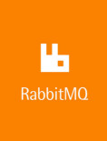

Roman Almazov Full-stack web developer
Backend:
Core language: PHP (5.*-7.2)Knowledge of OOP, understanding and application of design patterns (MVC) and SOLID
Understanding of design principles RESTful web-API
Frameworks: Laravel
 Laravel, is a free, open-source PHP web framework, created by Taylor Otwell and intended for the development of web applications..
WikipediA
,
Symfony
Symfony, is a PHP web application framework and a set of reusable PHP components/libraries. Symfony was published as free software on October 18, 2005 and..
WikipediA
,
Kraken
Laravel, is a free, open-source PHP web framework, created by Taylor Otwell and intended for the development of web applications..
WikipediA
,
Symfony
Symfony, is a PHP web application framework and a set of reusable PHP components/libraries. Symfony was published as free software on October 18, 2005 and..
WikipediA
,
Kraken
 Kraken is the first and only multi-processed, multi-threaded, fault-tolerant framework for PHP.
Kraken is the first and only multi-processed, multi-threaded, fault-tolerant framework for PHP.Kraken-PHP.net , Silex Silex (web framework) Silex is a micro web framework written in PHP and based on Symfony, Twig (template engine) and Doctrine (database abstraction). It is MIT Licensed. WikipediA , Bff
 Bff is PHP-framework for heavy and strong app. Not open source and have hidden documentation.
Bff is PHP-framework for heavy and strong app. Not open source and have hidden documentation.
DB: MySQL, PostgreSQL, SQLite
Additionally: Memcached Memcached, is a high-performance, distributed memory object caching system, generic in nature, but intended for use in speeding up dynamic web appli... Php.net , Gearman Gearman, is a generic application framework for farming out work to multiple machines or processes. It allows applications to complete tasks in parall... Php.net , RabbitMQ  RabbitMQ, is lightweight and easy to deploy on premises and in the cloud. It supports multiple messaging protocols. RabbitMQ can be deployed in distri... RabbitMQ.com , Ratchet Ratchet- WebSockets for PHP, is a loosely coupled PHP library providing developers with tools to create real time, bi-directional applications between clients... Socketo.me , IonCube IonCube- The encoding products were subsequently ported to FreeBSD, Microsoft Windows and Mac OS X, and the range of products expanded to offer addi... IonCube.com , Jasonette
 Jasonette- Quite a different way to make an app 100% native IOS, Android...
Jasonette.com
,
Doctrine
Doctrine- (ORM), is the home to several PHP libraries primarily focused on database storage and object mapping...
Doctrine-project.org
,
Elasticsearch
Elasticsearch- is a search engine based on Lucene. It provides a distributed, multitenant-capable full-text search engine with an HTTP web interface...
Elastic.co
Jasonette- Quite a different way to make an app 100% native IOS, Android...
Jasonette.com
,
Doctrine
Doctrine- (ORM), is the home to several PHP libraries primarily focused on database storage and object mapping...
Doctrine-project.org
,
Elasticsearch
Elasticsearch- is a search engine based on Lucene. It provides a distributed, multitenant-capable full-text search engine with an HTTP web interface...
Elastic.co
Other: HTTP, Unix, Apache, Nginx, CDN
Frontend:
Core language: JavaScript (EcmaScript 8)Knowledge Single Page Applications (MVVM bindings, creation UI etc.)
Js frameworks: Vue.js Vue.js- the progressive JavaScript framework. Simple, minimal core with an incrementally adoptable stack that can handle apps of any scale.... Vuejs.org , ExtJS ExtJS- is a pure JavaScript application framework for building interactive cross platform web applications using techniques... WikipediA
Css frameworks: UiKit3, Skeleton, Bootstrap, Pure, Bulma, Element
Testing: Jest Jest- Jest is used by Facebook to test all JavaScript code including React applications. One of Jest's... Jest.io
Other: UI/UX, JQuery, SASS, LESS, Canvas, NodeJS, Highcharts, D3.js, Socket.io, Webix